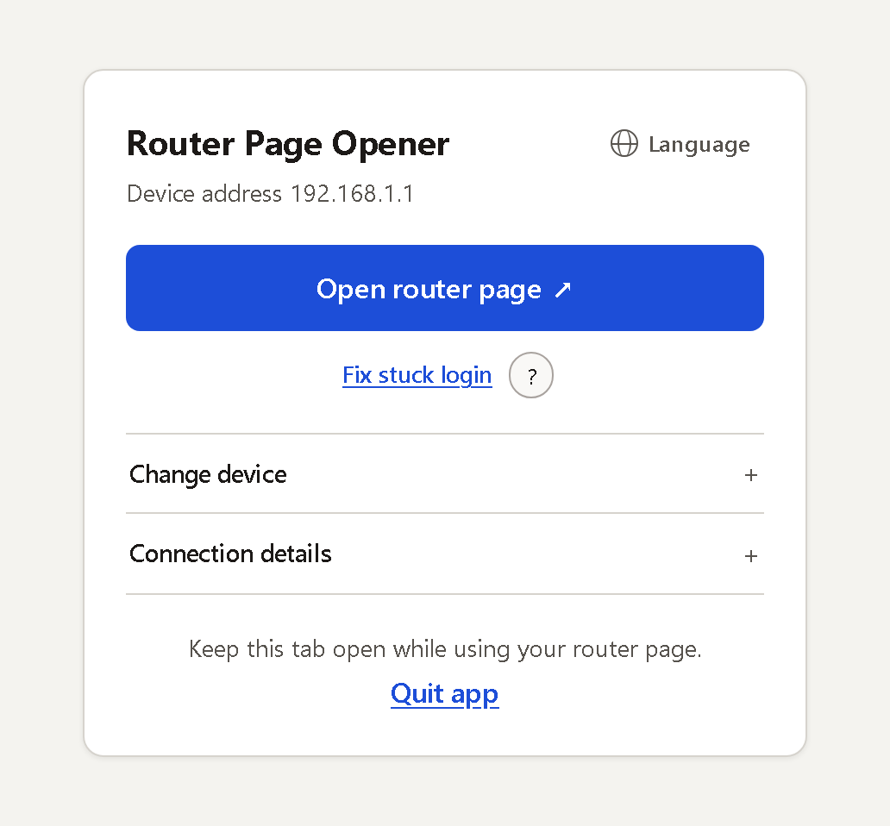

Open old routers & device panels
Access 192.168.1.1, old routers, HP printers, and server panels blocked by Chrome, Edge, or Android.
Install notes
- Android: No root, no VPN. If prompted, allow installing unknown apps.
- Windows: Portable — no install needed. If Windows SmartScreen appears, click
More info → Run anyway. - Linux (x86_64): Run
chmod +x legacy-router-opener && ./legacy-router-openerin a terminal. - macOS (Apple Silicon / Intel): Run
chmod +x legacy-router-opener-macos-arm64 && xattr -d com.apple.quarantine legacy-router-opener-macos-arm64 && ./legacy-router-opener-macos-arm64(use-amd64on Intel Macs).
Supported devices & errors
- Routers: WE, TE Data, Vodafone, Orange, Etisalat — Huawei (HG531, HG532, HG630, DG8045), ZTE (H108N, H168N)
- Printers & LAN: HP EWS printers, NAS panels, IP cameras
- Servers & Network: Dell iDRAC 6/7, HPE iLO 2/3/4, Cisco / HP switches, APC UPS
ERR_SSL_VERSION_OR_CIPHER_MISMATCHSSL_ERROR_UNSUPPORTED_VERSIONDH_KEY_TOO_SMALLERR_SSL_UNSAFE_LEGACY_RENEGOTIATION_DISABLED
Protocol details
- Windows, Linux & macOS: TLS 1.0–1.3, RC4/3DES, 1024-bit RSA, unsafe legacy renegotiation, HTTP (:80) fallback (for rare SSLv3 / 512-bit DH, use HTTP :80,
desktop/legacy/index.mjsin the repo, or the Android APK). - Android (.apk): All of the above plus built-in SSLv3 and 512-bit DHE-RSA via Bouncy Castle.
App preview
